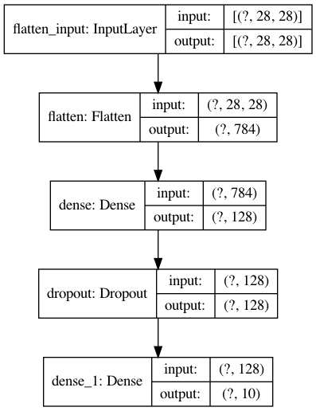
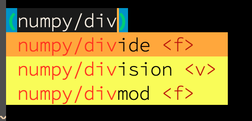
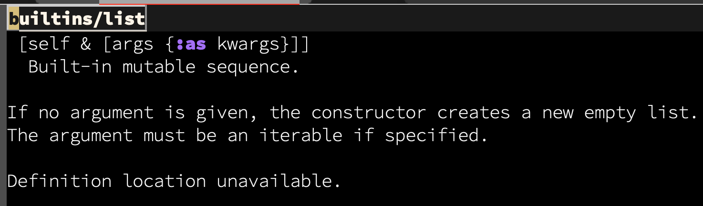

ML in Clojure via Python
Introduction
The primary focus of these notes is around exploring the use of Chris Nuernberger's libpython-clj (does he have a blog or Twitter?) for Clojurists unwilling to leave the comfort of their favourite language while still being able to leverage the power of the vast body of work available to Pythonistas.
For more depth and breadth, follow Carin Meier - here, here, and here.
Shell and Python Setup
- Straightforward shell commands to set up a virtualenv which we will call
ml -
MacOS notes (haven't checked Linux yet)
- Symlinking of the dylib from the virtualenv's lib directory is required for libpython-clj to work
- libpython-clj version 1.44
- Python version 3.8 installed via virtualenv
- Clojure initialization of the Python subsystem also needs some careful consideration, which is shown in the Clojure code sample later.
# Choose your own path
virtualenv -p python3.8 ~/.venv/ml
source ~/.venv/ml/bin/activate
# Use the latest pip
pip install --upgrade pip
# For reasons beyond me, the following is required
# for python-clj to work with the virtualenv system.
cd ~/.venv/ml/lib
# *IMPORTANT* - Based on the paths of brew-owned python version 3.8
ln -s /usr/local/Cellar/python@3.8/3.8.5/Frameworks/Python.framework/Versions/3.8/Python libpython3.8m.dylib
The default interactive shell is now zsh.
To update your account to use zsh, please run `chsh -s /bin/zsh`.
For more details, please visit https://support.apple.com/kb/HT208050.
bash-3.2$ created virtual environment CPython3.8.5.final.0-64 in 387ms
creator CPython3Posix(dest=/Users/jaju/.venv/ml, clear=False, global=False)
seeder FromAppData(download=False, pip=bundle, setuptools=bundle, wheel=bundle, via=copy, app_data_dir=/Users/jaju/Library/Application Support/virtualenv)
added seed packages: pip==20.1.1, setuptools==47.3.1, wheel==0.34.2
activators BashActivator,CShellActivator,FishActivator,PowerShellActivator,PythonActivator,XonshActivator
(ml) bash-3.2$ (ml) bash-3.2$ Collecting pip
Downloading pip-20.2-py2.py3-none-any.whl (1.5 MB)
Installing collected packages: pip
Attempting uninstall: pip
Found existing installation: pip 20.1.1
Uninstalling pip-20.1.1:
Successfully uninstalled pip-20.1.1
Successfully installed pip-20.2
We next install tensorflow.
# Install tensorflow
pip install tensorflow
Here onwards, in any new shell where you wish to use the ml virtualenv, run the following
source ~/.venv/ml/bin/activate
python --version
python -c 'import tensorflow as tf; print(tf.__version__)'Python 3.8.5 2.3.0
Session setup
The steps in this section relate to my setup with Spacemacs.
- My configuration based on using Spacemacs can be found here.
- This document is written in org-mode with literate style, hence this section to keep a record of the steps required to get going.
- Here we use
pyvenvto switch to the relevant virtualenv first.
Python
Evaluate the following elisp to switch the venv subsystem to ml.
(pyvenv-activate "~/.venv/ml")Quick system check to ensure we are in the right place, and also display version(s)
import tensorflow as tf
print(tf.__version__)2.3.0
Clojure
The Leiningen build file project.clj looks like this - the key part to focus on being the :dependencies, ignoring the other parts as mostly irrelevant to this note.
(defproject machine-learning-notes "0.1.0-SNAPSHOT"
:dependencies [[org.clojure/clojure "1.10.1"]
[clj-python/libpython-clj "1.46"]]
:min-lein-version "2.9.1"
:source-paths ["src"]
:repl-options {:port 25092})
With the Leiningen project set up, you should simply be able to cider-jack-in away. Or, of course, use any other editor/IDE combination you are comfortable with.
Hello Tensorflow
This example is from the official Tensorflow quickstart tutorial, and running it successfully will ensure we have everything set up right.
When accessed for the first time, the mnist dataset will be automatically downloaded.
from __future__ import absolute_import, division, print_function, unicode_literals
import tensorflow as tf
# Let's load the MNIST dataset
mnist = tf.keras.datasets.mnist
(x_train, y_train), (x_test, y_test) = mnist.load_data()
x_train, x_test = x_train / 255.0, x_test / 255.0ytrain is a vector of labels. Let's see what it looks like
y_trainarray([5, 0, 4, ..., 5, 6, 8], dtype=uint8)
Let's create the network
model = tf.keras.models.Sequential([
tf.keras.layers.Flatten(input_shape=(28, 28)),
tf.keras.layers.Dense(128, activation='relu'),
tf.keras.layers.Dropout(0.2),
tf.keras.layers.Dense(10, activation='softmax')
])
model.compile(optimizer='adam',
loss='sparse_categorical_crossentropy',
metrics=['accuracy'])Train
This next statement runs 5 rounds of the model fitting routines.
model.fit(x_train, y_train, epochs=5)Evaluate
Like model fitting, the evaluation too is straightforward execution.
model.evaluate(x_test, y_test, verbose=2)313/313 - 0s - loss: 0.0754 - accuracy: 0.9764 [0.07540476322174072, 0.9764000177383423]
Hello Tensorflow - Clojure Edition
Here's the equivalent version in Clojure leveraging the libpython-clj library.
Note that it is assumed that the previously mentioned manual steps (or equivalent) have been executed, otherwise the code below will most likely not work.
We first require some namespaces that we will use to configure libpython-clj to point to the right Python version/installation.
(ns machine-learning-notes.hello-ml
(:require [libpython-clj.python :as py]
[libpython-clj.jna.base]))
;; Depending on your Python version and virtualenv setup, change accordingly
(alter-var-root #'libpython-clj.jna.base/*python-library* (constantly "python3.8m"))
(py/initialize! :python-executable (str (System/getenv "HOME") "/.venv/ml/bin/python"))These steps are required on my machine, and YMMV. But you get the idea, and should be able to tweak accordingly.
Next, we require require-python and then use it liberally to pull in various python modules. The following should be executed only after the above initialize! sequence.
;; Note that the next require expression needs to come *after* the py/initialize! ebove
(require '[libpython-clj.require :refer [require-python]])
(require-python '[tensorflow :as tf]
'[tensorflow.keras.models :as models]
'[tensorflow.keras.layers :as layers]
'[tensorflow.keras.datasets.mnist :as mnist]
'[numpy :as numpy]
'[builtins :as python])
;; Helper
(let [counter (atom 0)]
(defonce show (fn [r] (println (str @counter " --> " r)) (swap! counter inc))))We're now set, and can move on to the implementation. What follows has pretty much a one-to-one correspondence with the Python version.
(defonce mnist-data (mnist/load_data))
(let [[[x-train y-train] [x-test y-test]] mnist-data] ;; => 1
(def x-train (numpy/divide x-train 255)) ;; => 2
(def y-train y-train)
(def x-test (numpy/divide x-test 255))
(def y-test y-test))
(defonce model (models/Sequential [(layers/Flatten :input_shape [28 28]) ;; => 3
(layers/Dense 128 :activation "relu")
(layers/Dropout 0.2)
(layers/Dense 10 :activation "softmax")
]))
(py/py. model compile ;; 4, 5
:optimizer "adam"
:loss "sparse_categorical_crossentropy"
:metrics (python/list ["accuracy"])) ;; 6
(py/py. model fit x-train y-train :epochs 5)A few notes
- 1
- Destructuring over python datastructures feels absolutely native
- 2
- While not as straightforward as Python,
numpycomes to the rescue for the division. Note thatnumpyis already installed withtensorflow. - 3
- Use of named arguments in Python has a clean
kwargequivalent in Clojure - 4
- Notice the use of the
py.macro. Furthermore, there arepy..andpy.-macros too. Do they remind you of the Javascript interop functions of Clojurescript? Clever naming! - 5
- Calling a method on
modelis via thepy/py.macro - 6
- Clojure vector doesn't cleanly translate into a Python list for the
metricsnamed argument and needs to be wrapped inpython/list.
All of the above is pretty neat. Save for a few quirks, but which is easily forgiven for the resultant Joy of Clojure!
Let's evaluate the model against the training dataset.
(py/py. model evaluate x-test y-test :verbose 2)313/313 - 0s - loss: 0.0698 - accuracy: 0.9779
The numbers match up with those of the Python version above - which probably means that the Clojure-Python bridge, and the operations on the data have worked as expected.
We can also visualize the model, using in-built support in Tensorflow. For the rendering, we'll need to install two more Python packages - pydot and graphviz.
# Make sure it's in the same virtualenv
pip install pydot graphvizCollecting pydot Using cached pydot-1.4.1-py2.py3-none-any.whl (19 kB) Collecting graphviz Using cached graphviz-0.14-py2.py3-none-any.whl (18 kB) =2.1.4 Using cached pyparsing-2.4.7-py2.py3-none-any.whl (67 kB) Installing collected packages: pyparsing, pydot, graphviz Successfully installed graphviz-0.14 pydot-1.4.1 pyparsing-2.4.7
Calling Python again in the straightforward manner that libpython-clj offers.
(require-python 'tensorflow.keras.utils)
(tensorflow.keras.utils/plot_model
model
:to_file "model.png"
:show_shapes true
:show_layer_names true
:rankdir "TB"
:expand_nested false
:dpi 96)
A Few More Tips
Another very satisfying - nay, exciting aspect is the autocomplete from the python "namespaces"! 
Or, even seeing documentation of Python functions 
Now, at some point you'd want to write your own Python code and use it from Clojure. And very likely, as you develop it in parallel, you will want to reload it whenever you update your Python code.
Before the following, we also ensure that bert, transformers and torch are pip-installed.
pip install bert transformers torchProcessing /Users/jaju/Library/Caches/pip/wheels/65/11/40/6439aef2635f7f0137a79c4defb4c4e65dd051ec0198429e3b/bert-2.2.0-py3-none-any.whl Collecting transformers Using cached transformers-2.10.0-py3-none-any.whl (660 kB) Collecting torch Using cached torch-1.5.0-cp38-none-macosx_10_9_x86_64.whl (80.6 MB) Processing /Users/jaju/Library/Caches/pip/wheels/ee/c9/a6/41a81618e939b746a3151700565d191bca832b6c345ea9b87a/erlastic-2.0.0-py3-none-any.whl Collecting tokenizers==0.7.0 Using cached tokenizers-0.7.0-cp38-cp38-macosx_10_10_x86_64.whl (1.2 MB) Requirement already satisfied: requests in ./python3.8/site-packages (from transformers) (2.23.0) Collecting sentencepiece Using cached sentencepiece-0.1.91-cp38-cp38-macosx_10_6_x86_64.whl (1.0 MB) Requirement already satisfied: numpy in ./python3.8/site-packages (from transformers) (1.18.4) Collecting filelock Using cached filelock-3.0.12-py3-none-any.whl (7.6 kB) =4.27 Using cached tqdm-4.46.0-py2.py3-none-any.whl (63 kB) Processing /Users/jaju/Library/Caches/pip/wheels/11/17/00/2a4439eeb3a42a66b3649af2ef52ead483766361dc65b31498/regex-2020.5.14-cp38-cp38-macosx_10_15_x86_64.whl Processing /Users/jaju/Library/Caches/pip/wheels/7b/78/f4/27d43a65043e1b75dbddaa421b573eddc67e712be4b1c80677/sacremoses-0.0.43-py3-none-any.whl Processing /Users/jaju/Library/Caches/pip/wheels/8e/70/28/3d6ccd6e315f65f245da085482a2e1c7d14b90b30f239e2cf4/future-0.18.2-py3-none-any.whl =1.21.1 in ./python3.8/site-packages (from requests->transformers) (1.25.9) =2.5 in ./python3.8/site-packages (from requests->transformers) (2.9) =3.0.2 in ./python3.8/site-packages (from requests->transformers) (3.0.4) =2017.4.17 in ./python3.8/site-packages (from requests->transformers) (2020.4.5.1) transformers) (1.15.0) Collecting click Using cached click-7.1.2-py2.py3-none-any.whl (82 kB) Collecting joblib Using cached joblib-0.15.1-py3-none-any.whl (298 kB) Installing collected packages: erlastic, bert, tokenizers, sentencepiece, filelock, tqdm, regex, click, joblib, sacremoses, transformers, future, torch Successfully installed bert-2.2.0 click-7.1.2 erlastic-2.0.0 filelock-3.0.12 future-0.18.2 joblib-0.15.1 regex-2020.5.14 sacremoses-0.0.43 sentencepiece-0.1.91 tokenizers-0.7.0 torch-1.5.0 tqdm-4.46.0 transformers-2.10.0
;; Suppose you have a "python/" directory in the CWD. Add it to the load path
(py/import-as sys sys)
(py/$a (py/py.- sys path) append "python")
;; Load "python/hello.py"
(py/import-as hello hello)
;; Use it
(show ((py/$. hello fib) 10))
;; Another way
(py/from-import hello fib fib2)
(show (fib2 6))
;; And one more
(require-python '[hello])
(show (hello/fib 10))
;; When reloading
(require-python '[importlib])
(importlib/reload hello)
(py/import-as hello_bert hello-bert)
(show ((py/$. hello-bert doit2)))
0 --> 89
1 --> 13
2 --> 89
henson
3 -->
INFO:transformers.tokenization_utils:loading file https://s3.amazonaws.com/models.huggingface.co/bert/bert-base-uncased-vocab.txt from cache at /Users/jaju/.cache/torch/transformers/26bc1ad6c0ac742e9b52263248f6d0f00068293b33709fae12320c0e35ccfbbb.542ce4285a40d23a559526243235df47c5f75c197f04f37d1a0c124c32c9a084
INFO:transformers.configuration_utils:loading configuration file https://s3.amazonaws.com/models.huggingface.co/bert/bert-base-uncased-config.json from cache at /Users/jaju/.cache/torch/transformers/4dad0251492946e18ac39290fcfe91b89d370fee250efe9521476438fe8ca185.7156163d5fdc189c3016baca0775ffce230789d7fa2a42ef516483e4ca884517
INFO:transformers.configuration_utils:Model config BertConfig {
"architectures": [
"BertForMaskedLM"
],
"attention_probs_dropout_prob": 0.1,
"hidden_act": "gelu",
"hidden_dropout_prob": 0.1,
"hidden_size": 768,
"initializer_range": 0.02,
"intermediate_size": 3072,
"layer_norm_eps": 1e-12,
"max_position_embeddings": 512,
"model_type": "bert",
"num_attention_heads": 12,
"num_hidden_layers": 12,
"pad_token_id": 0,
"type_vocab_size": 2,
"vocab_size": 30522
}
INFO:transformers.modeling_utils:loading weights file https://cdn.huggingface.co/bert-base-uncased-pytorch_model.bin from cache at /Users/jaju/.cache/torch/transformers/f2ee78bdd635b758cc0a12352586868bef80e47401abe4c4fcc3832421e7338b.36ca03ab34a1a5d5fa7bc3d03d55c4fa650fed07220e2eeebc06ce58d0e9a157
INFO:transformers.configuration_utils:loading configuration file https://s3.amazonaws.com/models.huggingface.co/bert/bert-base-uncased-config.json from cache at /Users/jaju/.cache/torch/transformers/4dad0251492946e18ac39290fcfe91b89d370fee250efe9521476438fe8ca185.7156163d5fdc189c3016baca0775ffce230789d7fa2a42ef516483e4ca884517
INFO:transformers.configuration_utils:Model config BertConfig {
"architectures": [
"BertForMaskedLM"
],
"attention_probs_dropout_prob": 0.1,
"hidden_act": "gelu",
"hidden_dropout_prob": 0.1,
"hidden_size": 768,
"initializer_range": 0.02,
"intermediate_size": 3072,
"layer_norm_eps": 1e-12,
"max_position_embeddings": 512,
"model_type": "bert",
"num_attention_heads": 12,
"num_hidden_layers": 12,
"pad_token_id": 0,
"type_vocab_size": 2,
"vocab_size": 30522
}
INFO:transformers.modeling_utils:loading weights file https://cdn.huggingface.co/bert-base-uncased-pytorch_model.bin from cache at /Users/jaju/.cache/torch/transformers/f2ee78bdd635b758cc0a12352586868bef80e47401abe4c4fcc3832421e7338b.36ca03ab34a1a5d5fa7bc3d03d55c4fa650fed07220e2eeebc06ce58d0e9a157
INFO:transformers.modeling_utils:Weights of BertForMaskedLM not initialized from pretrained model: ['cls.predictions.decoder.bias']
INFO:transformers.modeling_utils:Weights from pretrained model not used in BertForMaskedLM: ['cls.seq_relationship.weight', 'cls.seq_relationship.bias']
This brings us to a logical checkpoint - our setup looks good and we should now be able to move on to the next parts.
Huggingface Tokenizers
Note This section is WIP.
Install some prerequisites
pip install tokenizers transformers
# If the version is not the most recent (0.7.0 as of writing this)
pip install --upgrade tokenizersMoving on to the Clojure bits. It's not too different from what you'd expect.
(require-python '[tokenizers
:refer [BertWordPieceTokenizer
SentencePieceBPETokenizer
CharBPETokenizer
ByteLevelBPETokenizer]])
(require-python '[transformers
:refer [BertTokenizer]])
;; Files downloaded from
;; https://s3.amazonaws.com/models.huggingface.co/bert/gpt2-vocab.json
;; https://s3.amazonaws.com/models.huggingface.co/bert/gpt2-merges.txt
(def tokenizer (ByteLevelBPETokenizer "gpt2-vocab.json" "gpt2-merges.txt"))
(def encoded (py/a$ tokenizer encode "I can feel the magic, can you?"))
(py/py.- encoded #_type_ids #_tokens offsets)